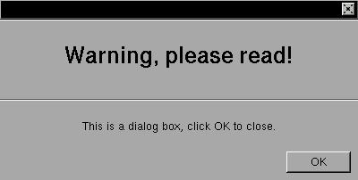

This is just a modifyed window without handlers for resizes, titlebar or minimization button.SINTAX
struct xtree *dialog_create(w,h);EXAMPLE
int w,h;By default this window is positioned in the center of your screen and can't be resized.
The XSTEP dialog box is a especial XSTEP window, without title or handlers for resizing. To be more close to the NeXTSTEP look-and-feel, you must create the labels and buttons in the correct positions, like this example.#include <xstep.h> void xmain(int n,char *p[]) { dialog_create(400,180); defaultfont=helvetica24b; label_create(0,0,0,-90,"Warning, please read!",gray,up); defaultfont=helvetica12m; label_create(0,-90,0,0,"",gray,up); label_create(0,-(24+16),0,40, "This is a dialog box, click OK to close.", invisible,center); button_create( -8,-8,72,24,"OK", window_close); }